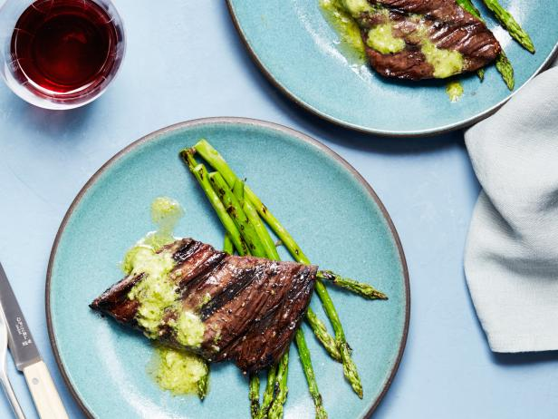

15-Minute Skirted Steak
A super flavorful and quick-cooking beef topped with pesto butter and served with grilled asparagus
Ingredients:
- 1 1/2 pounds skirt steak
- 3 tbsp canola oil
- Kosher salt and pepper
Instructions:
- Preheat cast iron grill over high heat
- Cut skirt steak into 4 even pieces
- Rub steak with half of the oil
See this recipe at Foodnetwork.com
